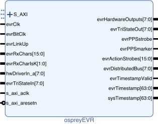

| Ports |
||
| Name |
Clock |
Description |
| S_AXI |
s_axi_aclk |
AXI4-Lite port. |
| s_axi_aclk |
– |
Clock for AXI4-lite port. |
| s_axi_aresetn |
s_axi_aclk |
Active-low reset input.
Resets all firmware. |
| evrClk | – | Receiver clock from
multi-gigabit transceiver. |
| evrBitClk | – | SERDES bit clock. Unused if SERDES_FACTOR is 1. Otherwise must be aligned with, and (SERDES_FACTOR÷2) times the rate of, evrClk. SERDES_FACTOR must be small enough to ensure that evrBitClk operates at 625 MHz or less. |
| evrLinkUp |
evrClk | Multi-gigabit
transceiver receiver status. |
| evrRxChars |
evrClk | Multi-gigabit transceiver
received data. Event codes and K28.5 alignment
commas are sent in the most significant eight
bits. Distributed bus and distributed data values
are sent in the least significant eight bits. |
| evrRxCharIsK |
evrClk | Multi-gigabit transceiver received data modifiers. |
| hwDriverIn_a |
– |
Each bit can be selected to drive its counterpart in
evrHardwareOutputs. |
| evrHardwareOutputs |
evrClk | Hardware output signals. Must connect directly to top-level output port. Source is selectable. |
| evrPPSstrobe |
evrClk | Asserted
for one evrClk cycle upon arrival of pulse-per-second
event. |
| evrPPSmarker |
evrClk | Asserted for 257 evrClk cycles upon arrival of pulse-per-second event. |
| evrActionStrobes |
evrClk | Event
action dual-port RAM output least significant
bits. Used to trigger the evrHardwareOutputs
pulse and/or set/reset the hardware output latch. |
| evrDistributedBus |
evrClk | Distributed
bus. Updated at one half evrClk rate. |
| evrTimestampValid |
evrClk | Asserted
when valid time has been received. |
| evrTimestamp |
evrClk | Time of day. Most significant 32 bits are POSIX seconds. Least significant 32 bits are the number of evrClk cycles since the arrival of most recent pulse-per-second event. |
| evrTriStateIn |
evrClk | Control the IOBUF T ports if ENABLE_TRISTATE_CONTROL is set to 1. |
| evrTriStateOut |
evrClk | IOBUF I ports. |
| sysTimestamp |
s_axi_aclk |
Time of day in system clock
domain. Because of the clock domain crossing logic
this value will be slightly delayed from the time day in
the evrClk domain. |
| Parameters |
|
| Name |
Description |
| HARDWARE_OUTPUT_COUNT |
Width of evrHardwareOutputs
port. |
| SERDES_FACTOR | Width of the hardware output
OSERDES blocks.
Output pulse delay and width are adjustable in steps
of 1/2 the evrBitClk interval if SERDES_FACTOR is greater than 1 or in
steps of the evrClk interval if SERDES_FACTOR is
1. Valid values are 1, 4, 6, and 8. |
| DISTRIBUTED_BUFFER_ADDR_WIDTH | Distributed buffer capacity is 2DISTRIBUTED_BUFFER_ADDR_WIDTH. |
| ENABLE_TRISTATE_CONTROL |
Specialized
applications may require tri-state control of the output
pin. Set this parameter to 1 to enable this mode of
operation, controlled by the evrTriStateIn ports. If
this parameter is 0 evrTriStateIn is
ignored. |
| ACTIVE_LOW_OUTPUTS |
When
set to 1 values sent to hardware outputs will be
inverted. |
A return value of 0
indicates success and a return value of -1 indicates failure
or all routines unless mentioned otherwise.
The status of the event receiver is returned by
int ospreyEVRStatus(void);
| Bit(s) | Name | Description |
| 0 |
OSPREY_EVR_STATUS_LINK_UP |
Set when evrLinkUp input is asserted. |
| 1 |
OSPREY_EVR_STATUS_TIMESTAMP_VALID | Set when time stamps are valid. |
| 2 |
OSPREY_EVR_STATUS_FIFO_PENDING | Set when event FIFO is non-empty. |
| 3 |
OSPREY_EVR_STATUS_FIFO_OVERFLOW | Set when event FIFO has
overflowed and events have been lost. |
| 8–4
|
OSPREY_EVR_STATUS_OUTPUT_COUNT_MASK | Number of hardware outputs. |
| 12–9 | OSPREY_EVR_STATUS_SERDES_FACTOR_MASK | Hardware output SERDES_FACTOR. |
| 13 |
OSPREY_EVR_STATUS_ACTIVE_LOW_OUTPUTS | Value of ACTIVE_LOW_OUTPUTS
parameter when module was built. |
| 21–14 | OSPREY_EVR_STATUS_TRISTATE_MASK | State of evrTriStateIn. |
The time of day can be read by invoking
int ospreyEVRGetTime(uint32_t
*seconds, uint32_t *ticks);
Return value is 0 on success, -1 if the interface has not
been initialized or the link is down, or the time stamps are not
valid, and -2 if a stable time value could not be read. One or
both arguments can be NULL in which case the corresponding value
will not be set.
The action(s) to take on the arrival of an event are set by the following routine.
int ospreyEVRSetEventAction(int event, int action);
Event numbers begin at 1. The 'action' argument is a bitmap. The least significant 16 bits specify the evrActionStrobes to assert on the arrival of specified event. The action strobes can also affect the hardware outputs as described in the following section. If bit 17 (OSPREY_EVR_ACTION_WRITE_FIFO) of the action is set the event code and time stamp will be written to a FIFO. Bit 16 (OSPREY_EVR_ACTION_INTERRUPT) is reserved for use as a future interrupt request.
Hardwae outputs are configured using the following routines. An 'output' value of 0 corresponds to the first hardware output channel.
int ospreyEVRSelectOutputSource(int
output, int source);
Outputs can
be driven by multiple sources as chosen by the value of
'source':
0 – Static 0.
1 – Programmable pulse generator
triggered by corresponding eventActionStrobe bit.
2 – Latch set by corresponding
event action bit. Reset by next most
significant event action bit.
' 3 – Corresponding bit in distributed bus
(applicable to first eight outputs only).
4 – Corresponding bit in hwDriverIn_a.
5 – Reserved.
6 – Reserved.
7 – Static 1.
The FEED JSON file fragment for the event generator I/O is produced by the ospreyEVR.py script included with the driver. The script can be invoked from the command line or from another python script as:
import ospreyEVR
ospreyEVR.ospreyEVR_emitJSON(EVR_REG_BASE=1100000, hwOutputCount=8)
The
functions described below are wrappers around the functions
mentioned in the previous section to simplify their use in a
FEED driver environment.
int ospreyEVR_FEEDwrite(int
offset, uint32_t value);
uint32_t ospreyEVR_FEEDread(int
offset);
The offset values are relative to the EVR_REG_BASE in the python script, so a typical invocation from a FEED driver for the EVR_REG_BASE shown above might be:
#define REG_EVR_START 1100000
#define REG_EVR_END 1110000
. . .
if ((address >= REG_EVR_START) && (address < REG_EVR_END)) {
return ospreyEVR_FEEDread(address - REG_EVR_START);
}
| Name | Type | Description |
| EVR:EVENT:nnn:action | longout | The evrActionStrobes bit(s) to
assert for one evrClk interval on the arrival of the
specified event (nnn is a three digit value from 001 to
126). |
| EVR:OUT:i:source | mbbo | Signal source for the specified hardware output. |
| EVR:OUT:i:delay | longout | Delay from the assertion of the corresponding event action strobe to the rising edge of the hardware output pulse |
| EVR:OUT:i:width | longout | Hardware output pulse width. |